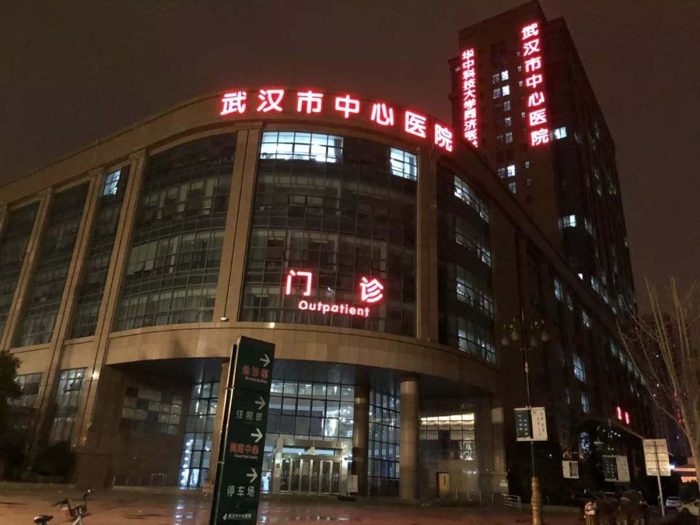
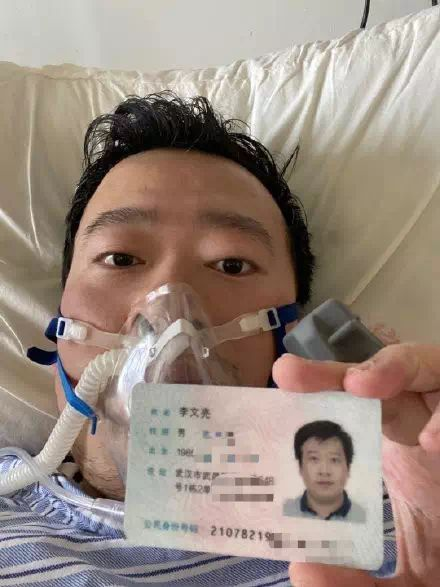
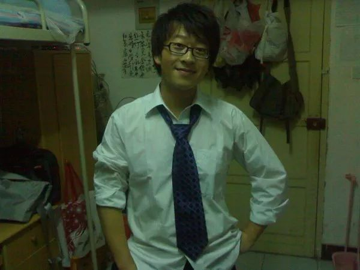
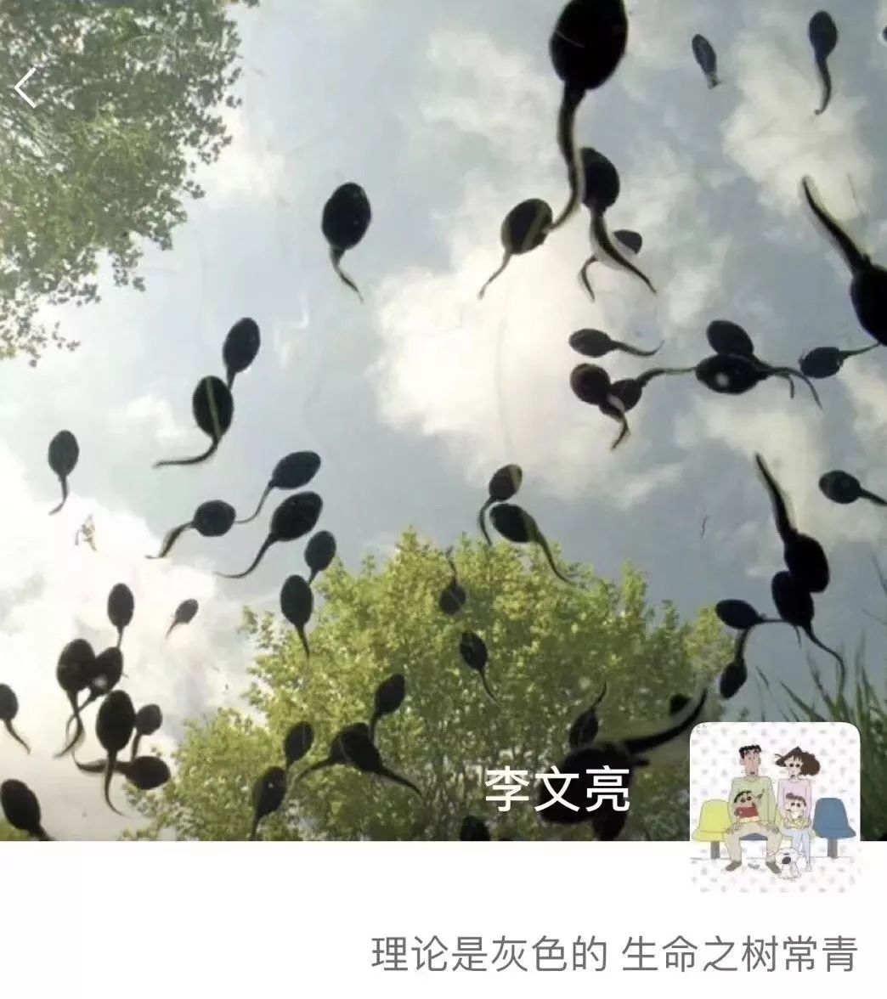
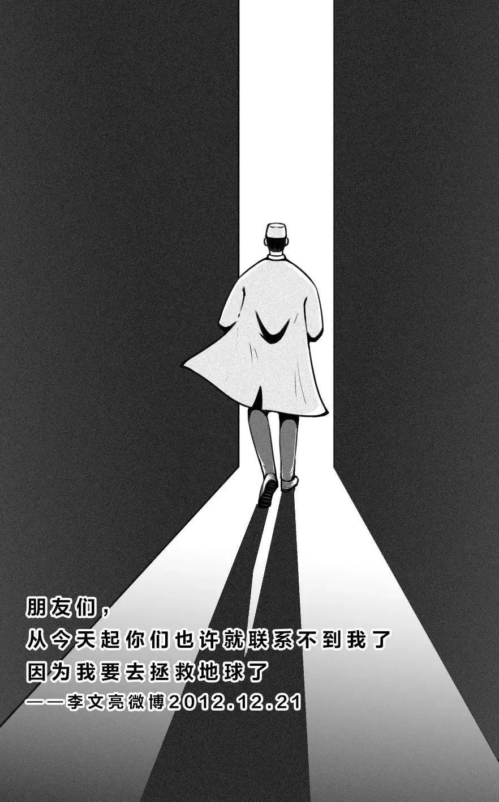

哀悼李文亮，应给“吹哨人”正名
原文链接 备份链接 全文共*1529*字，阅读大约需要3分钟。 训诫书犹在，“吹哨人”何以安息？人们还希望看到对李文亮等人的训诫能得到纠正，让付出了巨大代价的“吹哨人”能得到正名。 本文首发于南方周末 未经授权 不得转载 文 | …

他曾许过一个新年愿望，新的一岁希望能做一个简单的人，看得清世间繁杂却不在心中留下痕迹，保持足够的平常心。他还说，不经审视的人生是不值得过的，希望大家都能实现自己的价值，共勉。他的微信签名是，「理论是灰色的，生命之树常青」。
文｜罗婷 杨宙 罗芊
编辑｜糖槭
1
昨日夜里11点，《人物》记者赶到武汉中心医院后湖院区的住院楼时，李文亮的两位大学同学已经在那里等待了半个小时。他们也是武汉的医生，是受全班同学委托，来这里看他。因为已经过了会客时间，住院楼入口处已经被拦起来，进不去了。
夜深了，这栋楼还很明亮，二层是正在抢救李文亮的ICU，再往上几层，住着他同样被感染的父母。同学担心他们，打电话给李文亮父亲，希望能上去陪着。但医院的工作人员正陪在他父亲身边，在电话里拒绝了这一请求。后来他们又与在外地的、怀着孕的李文亮妻子通话，她着急、担忧，但又不知道最新的信息。他们告诉她：「有什么消息的话，一定会第一时间给你打电话。」

武汉市中心医院大楼
那时刚过零点，院方还在继续着对李文亮的抢救。但有一位楼里的护士，穿得很单薄，独自下到一楼，大哭起来。先是靠着墙，后来又蹲在地上哭。就算是站在十几米外，那哭声都清晰可闻，在深夜安静的医院里回荡。
同学谈到了李文亮的病情。李文亮曾在几天前接受媒体采访，看起来精神状态不错。但实际上，十多天来，李文亮一直都没有脱离过呼吸机。他的同学说，「这本来就是个很不好的预兆。」
昨天下午，李文亮从武汉中心医院南京路院区转到后湖院区，据这位同学说，原因是他已经需要用ECMO（体外肺循环）了，但是中心医院南京路院区没有——他们的所有设备全都被调到了金银潭医院。而后湖院区还有一台，能救他的命。但网上也有另一种说法，说这台呼吸机，也是从另一家医院借的。
他的病情已经严重到了要用体外肺的地步了吗？这位同学说，「实际上，早就该用了。」
中心医院的医生吴岩在昨天深夜告诉《人物》，李文亮于昨日下午转院区后，状况很差，「不适合转，风险高。晚上转过来了，不一会就呼吸衰竭气管插管，但是没有救过来，呼吸心跳停了，心外按压三个小时没有生命体征，但是还是上了ECMO，现在不让宣告死亡。」
「我尽管知道他大约已经走了，但是我仍然盼望网上的传言是真的，ECMO能够创造奇迹。」今天凌晨00:43，该医生告诉《人物》。
「我学的东西告诉我基本不可能，但是我又总觉得可能有奇迹。」这位医生以自己的医学常识解释，「呼吸心跳停了3小时，正常是可以宣告临床死亡。但是我们搞了一台ECMO，维持循环。」
据财新报道，凌晨2点，抢救还在进行。凌晨3点48分，武汉中心医院官微发出消息：我院眼科医生李文亮，在抗击新型冠状病毒的疫情工作汇总不幸感染，经全力抢救无效，于2020年2月7日凌晨2点58分去世。三个小时的心外按压，至少三个小时的ECMO，没有创造奇迹。
在这之前，昨夜23:25分，世界卫生组织已经发布了一则推特：「我们为李文亮医生的离去感到深深的悲痛。我们所有人都应该赞美他就新型冠状病毒疫情所做的工作。」

李文亮医生
2
李文亮的大学同学告诉《人物》，2019年12月30日下午，李文亮就是在他们的班级群里告知大家：「华南水果海鲜市场确诊了7例SARS，在我们医院后湖院区急诊科隔离。」过了半个小时，他还在补充：「最新消息是，冠状病毒感染确定了，正在进行病毒分型。让家人亲人注意防范。」
同为医生，他们是相信李文亮的。他从业多年，判断不太可能出错。也正是因为李文亮的警示，他们从那时开始做防护，开始囤N95口罩，上班时也开始穿防护服。那时知道的人不多，所以口罩还很好买。正是这一批物资在疫情爆发之初保护了一些医生，也在之后物资短缺之时解他们的燃眉之急。
李文亮被训诫后，同学们都知道了。他们更谨慎了，不再在微信上聊有关新型病毒的事情，但还是会口头传播，特别是很多80后的年轻医生，知道后都开始做防护。同学说，「所以他真的救了很多人。」
在被训诫前，李文亮在医院里并不是个出名的医生。另一个科室的年轻医生吴岩没怎么听说过他的名字，也从来没见过他。「我只是因为他被谣言才知道的，当时他被训诫了，我们当时都为他不平，后来就听说他感染了……他一边被处分一边又感染了，家里的人也生病了。听说心理压力很大。后来他平反了我们都很开心。」
他打心里佩服李文亮的勇气，「我只知道，他说了实话，说了很多人不敢说的话。但是得到了并不相称的惩罚，身心受到了很大的创伤。」
这一晚，医生吴岩的朋友圈里「被蜡烛刷屏了」。尽管在接受《人物》采访时，李文亮还未被宣告死亡，但其时他的心跳已经停了3个小时。吴岩说，「我们都知道，为李医生哀鸣，何尝不是为自己哀鸣。」
凌晨1点，李文亮的大学同学还穿梭在四处被锁死的住院楼里，寻找可能还开着的通道。他们希望能上到李文亮父母住院的楼层，至少看一眼他们，知道他们还好不好。但尝试了两个小时，都没有成功。
在寻找出口时，他们会经过一面面挂着武汉中心医院辉煌历史的墙，还有一面墙写着医院的院训：医院以救死扶伤为天职，所有生命的伤害、病痛、凋零每天都在上演，这些带给人们最有价值的启示就是敬畏与爱护。敬畏生命就是要视患如亲，呵护患者生命健康，以人为本，对员工真心实意。

李文亮的人人网头像
3
李文亮医生的微博记录下了他鲜活又普通的日常生活。
他很喜欢吃，时常调侃自己「食欲猛于虎」，想到要吃橘子，风雨大作穿着拖鞋跑1000米也要买来吃；看到冰淇淋店各式各样的冰淇淋，会感叹，「靠，诱惑太多」；居酒屋和海底捞都是他的爱，他说自己爱死芥末和生鱼片了。炸鸡也是他的爱，德克士的手枪鸡腿，每次去火车站他都会点，他这样描述那只鸡腿的美味——大大的鸡腿连着胯部，看着就好有满足感，外皮酥脆，肉质软嫩，配上独家的干碟，绝对是腿届极品！这时候再来一杯可乐，感觉人生已经达到了巅峰。
他追剧，喜欢看《庆余年》，也追星，最近比较喜欢肖战，觉得肖战长得帅，唱《绿光》特别好听。车厘子158元一斤，他会调侃自己吃不起，买了几个橘子花了30块，就喊自己「屌丝」，感叹生活艰辛。他还很喜欢转发抽奖微博，抽手机的转发，抽车的转发，抽车厘子也转发，终于有一次，他没做中奖绝缘体，抽中了一盒湿巾，他专门发微博感谢了金主。
做医生很辛苦，他时不时会抱怨一下工作，「累死小爷了」，虽然他时常把「不想干了」挂在嘴边，抱怨连值三天班，「要死」，「讨厌门诊」，盼着下班了去吃锅包肉，可真让他离开，他根本舍不得脱下身上那件白大褂，他内心的想法是，「病人虐我千百遍，我待病人如初恋」。
翻看他的微博，你会觉得他有些可爱，这位眼科医生内心好像还住着一个小男孩，在社交网络上嬉笑怒骂，「尼玛」、「我去」、「靠」都挂在嘴边，他甚至会思考「鸡生蛋的时候会不会很痛苦」，见到一只蝴蝶，也要拍下来发在社交网络，配文：一只蝴蝶。有空的时候，他也喜欢出去走走，看油菜花，打羽毛球，如果路上有人叫他「叔叔」，他会「气疯」，觉得自己「受伤了」，他还很喜欢恶作剧，住酒店退房的时候会把被子叠成里面有人的形状吓唬服务员。
如果要问他最喜欢什么季节，那应该是秋天，他喜欢秋天的早晨，阳光穿过绿叶，在地上投下星星点点的影子。他曾这样形容武汉的秋天——它自有一股不热不冷的温柔，在这个季节里你能体会到最淅沥的细雨和最轻柔的风，当然你更能感受到落叶飘洒一地，踩上去咯吱咯吱响的美与心动。
李文亮医生分享过自己和家人相处的温馨瞬间，天气很好，孩子和妻子就在身边，父母来看望他，离开的时候搭高铁，他会专门拍下他们乘坐的列车留念。
他曾许过一个新年愿望，新的一岁希望能做一个简单的人，看得清世间繁杂却不在心中留下痕迹，保持足够的平常心。他还说，不经审视的人生是不值得过的，希望大家都能实现自己的价值，共勉。他的微信签名是，「理论是灰色的，生命之树常青」。

李文亮的朋友圈封面
但同时，他又是一个关心社会的人。他为在温州动车事故中敢言的主持人王青雷说话，要征集签名，让王青雷复职。2月1日，他接受了财新的采访。就算已经被训诫过、自己和父母都被感染，但他还是勇敢地表达自己：「一个健康的社会不该只有一种声音。」
同一天，他的核酸检测结果出来了，阳性。他说：尘埃落定，终于确诊了，还配了一个狗狗的表情。他在病房里看到许多网友的鼓励，在微博上感谢大家，「谢谢大家的支持，我没有被吊销执照，请大家放心，我一定积极配合治疗，争取早日出院」。
再之前，工作群里号召医生们报名到防疫一线时，他还说了一句：「我好了也报名」。在网上流传的另一张图里，有人在微信里问他：您病好以后，有什么打算？他说：好了就上一线，疫情还在扩散，不想当逃兵。

图源公众号咋整
（应采访对象要求，吴岩为化名）
没看够？
长按二维码关注《人物》微信公号
更多精彩的故事在等着你

长按二维码向我转账
受苹果公司新规定影响，微信 iOS 版的赞赏功能被关闭，可通过二维码转账支持公众号。
原文链接 备份链接 全文共*1529*字，阅读大约需要3分钟。 训诫书犹在，“吹哨人”何以安息？人们还希望看到对李文亮等人的训诫能得到纠正，让付出了巨大代价的“吹哨人”能得到正名。 本文首发于南方周末 未经授权 不得转载 文 | …
原文链接 备份链接 澎湃新闻记者 朱莹 黄霁洁 葛明宁 特约撰稿 张小莲 实习生 刘昱秀 沈青青 2月7日凌晨2点58分，武汉市中心医院眼科医生李文亮因感染新冠肺炎，抢救无效离世。 武汉市中心医院的官方微博7日凌晨发布了这一消息。当天上 …
原文链接 备份链接 2月7日凌晨，武汉市中心医院发布消息，该院眼科医生李文亮，在抗击新型冠状病毒感染的肺炎疫情工作中不幸感染，经全力抢救无效，于2月7日凌晨2点58分去世，该院深表痛惜和哀悼。当日中午，中纪委官网称，经中央批准，国家监委决 …
原文链接 备份链接 3月3日。 依然天阴，有点冷嗖嗖的。我在郊区的邻居一早发给我照片。留言说，你家的海棠开花了，你的微信文被封了。微信内容被封，我已习惯。但海棠开花却实在让人高兴。去年夏秋，一直大旱。树叶全枯并且掉光，我很担心这棵树会死 …
原文链接 备份链接 武汉中心医院眼科医生李文亮（1986-2020）（资料图/图） 全文共*5612*字，阅读大约需要14分钟。 李文亮还活着吗？李文亮抢救过来了吗？这位武汉眼科医生的命运，在这个深夜牵动着很多人的心。直到凌 …